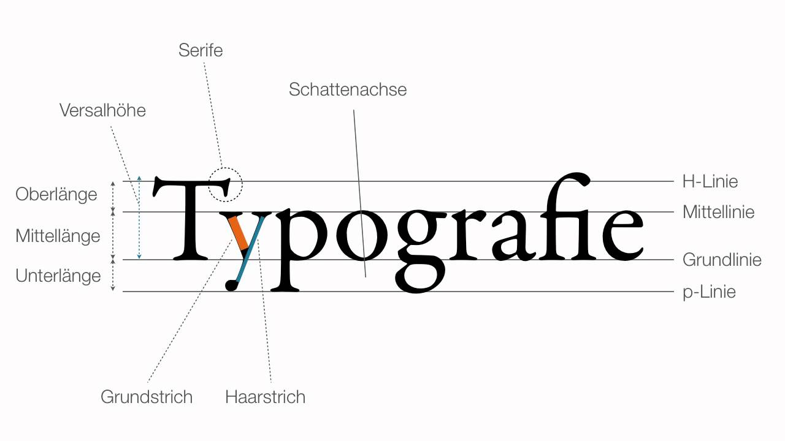

Typographie
Typographie ist die Wissenschaft gedruckter oder digitaler Schriften.
Du kennst bestimmt auch schon verschiedene Schriftarten (Fonts) aus Programmen wie zum Beispiel Microsoft Word.
Grundsätzlich unterscheidet man hierbei zwischen Schriften mit oder ohne Serifen. Serifen sind diese kleinen Dekorationen an bestimmten Buchstaben, die in der nebenstehenden Grafik markiert sind.
Aber nicht nur die Fonts spielen in der Typographie eine Rolle - auch die Abstände zwischen einzelnen Buchstaben, Wörtern oder Zeilen spielen hier eine Rolle.
